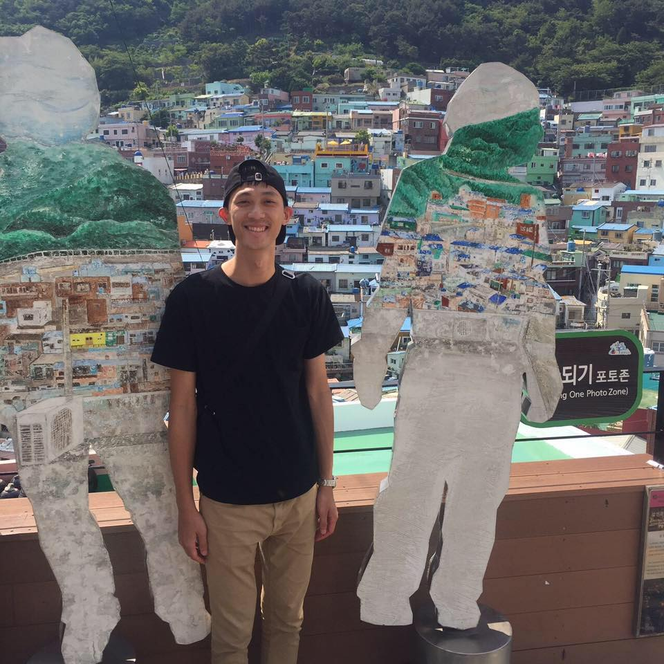

Yi-Chiao Li
Software developer, focus on inertial measurement unit (IMU) sensors in IoT devices, develop reliable algorithms for various applications,
including swimming, sleeping, fitness, and a software framework for wearable platforms.
👉 ryan331913@gmail.com
Work History
🚧 Senior Software Engineer | CyweeMotion
03/2017 - Present
Activity Recognition System
- Designed and implemented an architecture for IoT devices, optimized memory usage
by about 25%, and reduced power consumption by 16%.
- Developed activities recognition and awareness with machine learning based
algorithms and achieved average accuracy of 93%.
- Collaborated closely with team members to integrate wearable functions and managed
the released version.
- Built-up automated testing procedures with docker, gtest, and GitLab CI to ensure
quality control throughout the entire development cycle.
Swim, Sleep, and Fitness Activities
- Designed and implemented algorithm for daily swimming via filtering process,
features extraction, and machine learning.
- Improved swimming style accuracy from 80\% to 92\% by applying machine learning.
- Developed algorithm for sleeping activities by activity scores and statistical
features of heart rate.
- Implemented heart rate based algorithms for fitness metrics, such as calorie,
VO2 Max, EPOC, and PAI.
- Worked closely with QA to design a detailed testing plan to evaluate the performance
of swimming, sleeping, and fitness metrics.
Other Projects
- Designed a sensor-based architecture on smartphone platforms.
- Developed transportation classified and gesture algorithms on Android-based platforms.
- Implemented the Android app for algorithm testing.
🚧 Software Engineer | Pegatron
12/2015 - 02/2017
- Integrated camera and Global Navigation Satellite System (GNSS) for tracking box application.
- Developed path trajectory with Extended Kalman Filter (EKF).
- Collected videos for algorithm testing and camera calibration process.
- Developed camera calibration and ground truth tool.